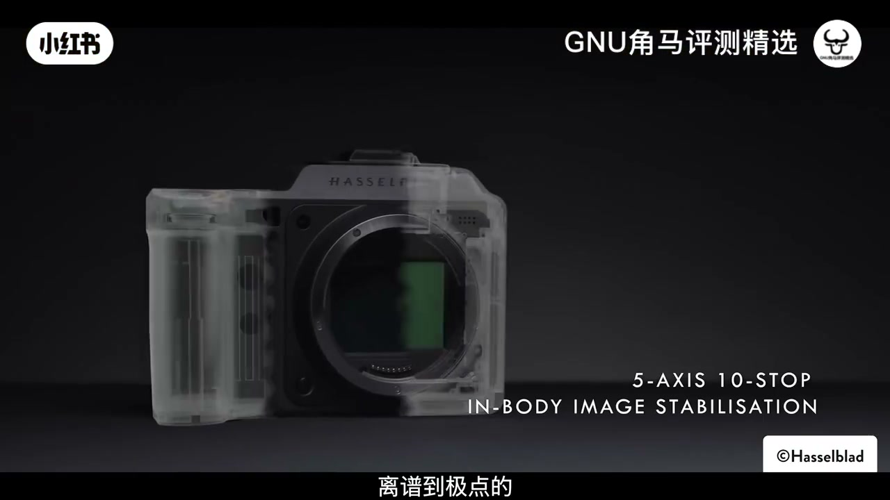

内容要点
这是一台被作者形容为「纸面上的数码相机终局」的中画幅：100MP + 高位深 RAW + 机内大容量与强防抖。真正要反复掂量的不是参数表，而是三个 catch——文件体积、体积重量、价格——以及你是否真的需要这份「拍照纯度」。
知识结构
纸面终局 vs 三个 catch；送测但无赞助合同，意见归作者。
100MP 中画幅、16bit RAW、宣称高动态范围、HDR 屏、1TB SSD、CFe-B；中画幅传统「慢」的取舍。
对比 907X 短板；手感/菜单/屏幕；宣称 10 档 IBIS。
细节与裁切弹性、色彩与弱光；中段夹带 Luminar 推广。
超大文件、机+镜体量、系统价格；仍认为「买到了所付的」。
X2D II 把钱砸在画质余量与仪式感上；若你不需要经常处理 200MB+ 文件、不背大变焦、也不为品牌溢价买单，全画幅仍够用。若目标就是中画幅「终局拍照机」，作者认为三个缺点仍挡不住「物有所值」。
00:00-01:30终局叙事、三个 catch 与利益披露
开场把 X2D II 放进「数码相机终局」语境：纸面规格几乎把中画幅旗舰该有的都堆上了。作者马上刹车——没有任何单一缺点能「毁掉」这台机器，但有三个 catch 会让人重新思考是否要把「不见得轻松的钱」砸进去，并预告片尾再展开。
披露段很清楚：哈苏没有付费制作本片，但友情提供机身与若干镜头试拍；无合同、无事前审片、无「该说/不该说」指令。信任议题被作者抬到很高：穿品牌装备的人更难让人轻信，因此他反复强调观点完全是自己的。

01:30-03:48100MP 中画幅与「不再那么慢」
最醒目卖点是约 1 亿像素的中画幅传感器，显著大于高端全画幅常见尺寸。作者强调由此带来的不仅是分辨率，还有 16-bit RAW、约 50MP 相关基础 ISO 叙述，以及哈苏宣称约 15.3 档动态范围——这些共同支撑「文件里有大量信息可玩」。
配套还包括机背高亮度 HDR 回看屏、机内 1TB SSD，外加 CFexpress Type B 卡槽兜底。他把「把大量狠活塞进一部中画幅机身」本身当作工程成就。
传统中画幅的代价是慢：为画质接受迟钝，对街头等要快速反应的题材不友好。作者提到几年前测过 907X + CFV 100C，仍列进个人「最好用过的相机」之一，但牺牲明确——无 EVF、无 IBIS、AF 慢，把「需要即时反应」的拍摄变成硬扛。X2D 系列正是冲着补齐这些短板来的。
03:48-06:50手感菜单与十档防抖
近几周主用后，作者区分两种「慢」：907X 让人因操作与对焦被迫放慢；X2D II 则是你愿意主动放慢去享受过程——两者味道不同。自动对焦与性能只是半个故事，另一半是「贵价机也不一定有的」扎实做工与稳定手感：握持舒服、控件干净、对焦点移动顺手，菜单克制，按键大多在预期位置。
电子取景与后屏被夸「大而鲜明」。1TB 内置存储不仅实用，还能在很多场合先忘掉换卡、回家再倒片。防抖方面，哈苏宣称 X2D II 可达约 10 档机身稳定；作者拿索尼 A1 II 约 8.5 档、其他高端全画幅常见约 8 档作纸面对照，并指出高像素下微小抖动更易显形，因此高档 IBIS 更有意义。实拍感受被形容为「不像防抖，像魔法」——能撑住数秒级曝光仍可用，但极限仍取决于镜头与姿势。
06:50-10:38画质：细节、裁切、色彩与弱光
中段插入 Luminar 新版本推广（Enhance AI、Light/Depth、即将到来的 Web Editor 与 AI Assistant 等），属于赞助信息，与机身画质论证分开看即可。
回到画质：100MP 的细节量被说成「离谱」，广角起拍也能裁进局部仍留够打印/再构图余量。作者常用较小的 45mm f/4；按约 0.79× 换算视野约等于全画幅 35mm 味道，却仍能靠裁切「像多带了几支焦段」。他强调裁切不是魔法——极端狂裁仍会塌——但在塌掉之前的余地「非常令人印象深刻」。
色彩被描述为自然、不过度「制」；弱光表现符合大底预期，高 ISO 噪点仍会出现，但结合细节与有效防抖，他很少在低光场景过度焦虑。总结句很克制：器材很少「完全改变你怎么拍」，更多是人在用机；而这台机带来的是一种接近「昂贵圣代」的极端愉悦。
10:38-13:54三个 catch：文件、体量、价格
Catch 一：文件巨大。100MP 16-bit RAW 单张可轻松超过 200MB，四五张就接近 1GB。机内 1TB 能救急，但长期归档与后期需要海量盘位和更强电脑——总拥有成本继续攀升。降采样能减负，但「花这笔钱却经常丢掉所买的画质」让他心理不适。
Catch 二：体积与重量。机身本身对中画幅并不夸张，配小 45mm 尚可半天手持；一旦上更大镜头尤其变焦，肩膀负担立刻回到「DSL R 当年」的分量——不是随手塞口袋的相机，而是你「有明确拍摄意图」才背出去的系统。
Catch 三：价格。机身已是巨款，XCD 镜头群叠加后更快失控。作者明确：你绝对不需要这台机才能拍出好照片；若买它意味着卖车、掏空房贷或要向另一半做「重大解释」，市场上有太多更理性的选择。
即便如此，他仍把 X2D II 称为某种意义上的「最好相机」之一：不只是贵得让人觉得特别，而是在现代数码机里，你确实更接近「付多少、拿回多少」的高端表现。三个 catch 成立，但挡不住他对这台「终局拍照机」的价值判断。